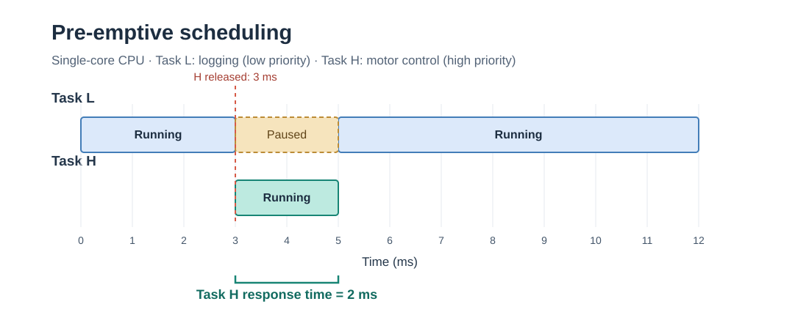
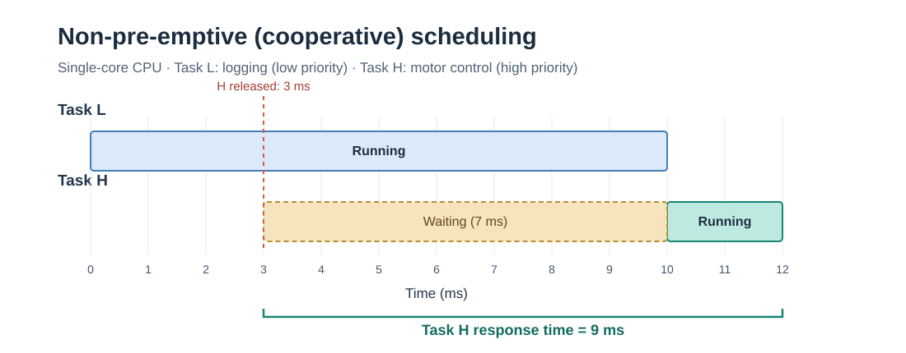

1.5 General-purpose Operating Systems versus Real-time Operating Systems¶
1.5.1 Why do robots need operating systems?¶
In the previous chapters, we learned that robotic software must often perform several operations within specified timing constraints.
Consider an autonomous mobile robot, it may need to read distance sensors, calculate motor commands, monitor battery voltage, communicate with another computer, or record diagnostic information.
These operations may need to happen repeatedly, and some may need to happen concurrently.
-
But who decides which operation runs first?
-
Who determines when a waiting task can execute?
-
Who manages access to the processor and other hardware resources?
These responsibilities are commonly handled by an operating system (OS).
An operating system is software that manages computing resources and provides services to applications. Typical responsibilities include: Scheduling software tasks, Managing memory, Handling hardware interrupts, Providing communication mechanisms, Managing input and output, Coordinating access to shared resources.
Let's take an example of Mobile robot controller¶
A robot controller may contain three tasks:
| Task | Function | Example period |
|---|---|---|
| Sensor task | Read distance measurements | 50 ms |
| Control task | Calculate motor commands | 20 ms |
| Logging task | Record system information | 500 ms |
All three tasks may need processor time.
On a single-core processor, only one task can execute on that core at a particular instant.
The operating system's scheduler helps decide which ready task executes (Read more: Process Scheduling in OS - Geekforgeeks).
Note
Not every robot requires an operating system.
A simple microcontroller can execute a single program directly without a conventional OS. This is commonly called bare-metal programming.
An RTOS becomes useful when the application needs structured task scheduling, concurrency, and other operating-system services.
1.5.2 General-purpose operating systems¶
A general-purpose operating system (GPOS) is designed to support a wide variety of applications and workloads. E.g., Microsoft Windows, Standard desktop Linux distributions, macOS.
These systems are designed to provide capabilities such as:
- running multiple applications,
- supporting graphical user interfaces,
- managing files and storage,
- providing networking services,
- sharing computing resources,
- maintaining good overall performance and responsiveness.
Example: Windows laptop¶
Imagine running the following applications simultaneously: VS Code, a web browser, a music player,a C++ robotics simulator. The operating system manages these applications and shares the available computing resources between them. This works well for ordinary computing.
However, suppose your robotics simulation contains a control task that should execute every 10 ms. Other system activities may affect when the task actually executes. For instance, background applications may consume processor time, device drivers may perform some tasks, the OS may schedule another task, memory management may introduce delays.
As a result, the task may occasionally start later than intended.
Key concept
A GPOS usually aims to provide good overall performance & responsiveness.
It doesn't automatically guarantee that an ordinary application will meet every real-time deadline.
This does not mean that Windows or standard Linux cannot execute time-sensitive programs. They can, and they are useful for learning, simulation, development, and many robotics applications.
The important distinction is between observed timing performance and a guaranteed timing bound.
1.5.3 Real-time operating systems¶
A real-time operating system (RTOS) is designed to support applications with explicit timing requirements.
An RTOS typically provides mechanisms for:
- Task scheduling,
- Task priorities,
- Pre-emption,
- Timers and periodic execution,
- Interrupt handling,
- Task synchronisation,
- Inter-task communication
The objective is to make timing behaviour sufficiently predictable for the application's requirements.
Example: Embedded robot controller¶
Let's consider a microcontroller controlling a mobile robot. The controller executes a high-priority motor-control task, a medium-priority sensor task, & a lower-priority logging task.
Now let's suppose the logging task is currently running when the motor-control task becomes ready. With a suitable pre-emptive scheduling configuration, the RTOS can interrupt the logging task and allow the higher-priority motor-control task to execute.
This reduces the time the control task spends waiting for lower-priority work.
Important
An RTOS does not automatically guarantee that every deadline will be met.
Meeting deadlines also depends on execution times, priorities, resource sharing, interrupt behaviour, hardware, and the overall system design.
A widely used example is FreeRTOS, a real-time operating-system kernel commonly used in embedded systems.
Its default single-core scheduling policy uses fixed priorities and pre-emption (Read more: FreeRTOS Scheduling - FreeRTOS Documentation).
1.5.4 What is task scheduling?¶
Task scheduling is the process of deciding which task should execute on the processor.
Consider a single-core processor with three ready tasks:
| Task | Function | Priority |
|---|---|---|
| A | Motor control | High |
| B | Sensor processing | Medium |
| C | Data logging | Low |
If all three tasks are ready and the scheduler uses fixed-priority pre-emptive scheduling, Task A is selected first.
When Task A finishes or blocks, the scheduler can select Task B.
Task C runs when no higher-priority task is ready.
Figure 1.5.1: Simplified task scheduler¶
flowchart LR
A["Tasks become ready"] --> B["Operating-system scheduler"]
B --> C{"Which ready task has the highest priority?"}
C --> D["Select task"]
D --> E["Execute on CPU"]
E --> F{"Task completes, blocks or is pre-empted?"}
F --> G["Update task states"]
G --> BThis is a simplified representation of priority-based scheduling.
Actual operating systems may use different scheduling policies and additional rules.
Why is scheduling important?¶
Suppose the motor-control task must complete within 10 ms.
If it waits too long before executing, it may miss its deadline even if its calculations require only 2 ms of processor time.
From previous chapter, we know that
where:
- \(R\) = task response time.
- \(r\) = release time.
- \(t_{\text{completion}}\) = completion time.
Scheduling delays contribute to the response time.
Therefore, scheduling behaviour is an important part of real-time system design.
1.5.5 Pre-emptive versus non-pre-emptive (cooperative) scheduling¶
Operating systems use different scheduling approaches to determine when tasks can execute and whether a running task can be interrupted.
Two important approaches are:
- Pre-emptive scheduling
- Non-pre-emptive scheduling, which includes cooperative scheduling
The fundamental difference is whether the scheduler can forcibly take the processor away from a running task to execute another task.
Pre-emptive scheduling¶
In pre-emptive scheduling, the operating system can interrupt a running task and allow another task to execute, according to its scheduling policy. For example, in a fixed-priority pre-emptive system, a high-priority motor-control task may become ready while a lower-priority logging task is running. The scheduler can pre-empt (temporarily suspend) the logging task and allow the higher-priority motor-control task to execute. Once the motor-control task finishes or blocks, the logging task may resume.
This approach is particularly useful in robotics because time-critical tasks can receive processor time without waiting for lower-priority tasks to finish.
Pre-emptive scheduling example:¶
Let's consider a robot with two tasks:
- Task L: Low-priority data logging.
- Task H: High-priority motor control.
Now let's assume the following:
- Task L starts executing at 0 ms and requires 10 ms of CPU time.
- Task H becomes ready (is released) at 3 ms.
- Task H requires 2 ms of uninterrupted execution.
- The processor has a single core.
- Scheduling and context-switching overheads are ignored.
The execution sequence is:

The response time of Task H is calculated as:
where:
- \(R_H\) = response time of Task H
- \(r\) = release time
- \(t_{\text{completion}}\) = completion time
Substituting the values:
Task H responds quickly because it does not have to wait for the lower-priority task to finish.
Note
Pre-emption does not mean that a higher-priority task will always execute instantaneously.
In a real system, context-switching overhead, interrupt handling, and other factors may introduce additional delays.
Non-pre-emptive scheduling¶
In non-pre-emptive scheduling, the scheduler does not forcibly interrupt a running task simply because another task becomes ready.
Once a task begins executing, it retains the processor until it:
- completes its execution,
- blocks while waiting for an event or resource,
- or voluntarily yields control, if supported by the scheduling system.
Consequently, even a high-priority task may have to wait while a lower-priority task is executing.
Cooperative scheduling¶
Cooperative scheduling is a form of non-pre-emptive scheduling.
In cooperative scheduling, tasks voluntarily cooperate by yielding control or blocking so that other ready tasks can execute.
For example, a task may call an operating-system function to yield the processor after completing part of its work.
Unlike pre-emptive scheduling, the operating system does not forcibly interrupt the task merely because a higher-priority task becomes ready.
Key distinction
Non-pre-emptive scheduling is the broader category in which a running task is not forcibly displaced by the scheduler.
Cooperative scheduling is a form of non-pre-emptive scheduling that relies on tasks voluntarily yielding or blocking to allow other tasks to run.
The terms are sometimes used interchangeably, but they are not always identical.
Non-pre-emptive scheduling example:¶
Consider the same two tasks:
- Task L: Low-priority data logging.
- Task H: High-priority motor control.
Let's assume the following:
- Task L starts executing at 0 ms.
- Task L requires 10 ms of uninterrupted execution.
- Task H becomes ready at 3 ms.
- Task H requires 2 ms of execution.
- Task L does not yield or block before completing.
- Scheduling overhead is ignored.
The execution sequence is:

Figure 1.5.1: Non-pre-emptive scheduling timeline¶
Step-by-step explanation:
- At 0 ms, Task L begins executing.
- At 3 ms, Task H becomes ready.
- Task H cannot pre-empt Task L.
- Task L continues executing until 10 ms.
- At 10 ms, Task L finishes and releases the processor.
- Task H begins executing at 10 ms and completes at 12 ms.
The response time of Task H is:
Although Task H requires only 2 ms of CPU execution time, its response time is 9 ms because it must wait for Task L.
The waiting time is:
Therefore:
This relationship holds for this example because Task H executes continuously after it starts.
What if Task L yields earlier?
Suppose Task L voluntarily yields at 4 ms instead of continuing until 10 ms.
If the scheduler selects Task H immediately, Task H can execute from 4 ms to 6 ms.
Its response time becomes:
This demonstrates how cooperative scheduling can improve responsiveness when tasks yield frequently enough.
Comparison: Pre-emptive versus non-pre-emptive scheduling¶
| Feature | Pre-emptive scheduling | Non-pre-emptive scheduling |
|---|---|---|
| Can a running task be forcibly interrupted by the scheduler? | Yes, according to scheduling rules | No, not merely to schedule another ready task |
| Can a higher-priority task immediately replace a lower-priority task? | Usually, if pre-emption is permitted | No; it must wait for the running task to relinquish the processor |
| Response to time-critical tasks | Often faster | Depends on how long other tasks continue executing |
| Programming complexity | Requires careful handling of concurrent access to shared data | Can simplify some concurrency concerns |
| Risk of long waiting times | Still possible because of blocking and other delays | Higher when tasks execute for long periods without yielding |
| Typical use | Many RTOS configurations and GPOS | Cooperative task loops and some embedded scheduling configurations |
Comparing the examples¶
Both examples use the same tasks and execution requirements.
| Measurement | Pre-emptive | Non-pre-emptive |
|---|---|---|
| Task H release time | 3 ms | 3 ms |
| Task H start time | 3 ms | 10 ms |
| Task H execution time | 2 ms | 2 ms |
| Task H completion time | 5 ms | 12 ms |
| Task H waiting time | 0 ms | 7 ms |
| Task H response time | 2 ms | 9 ms |
The high-priority motor-control task completes 7 ms earlier in the pre-emptive example.
Suppose Task H has a relative deadline of:
For pre-emptive scheduling:
The task meets its deadline.
For non-pre-emptive scheduling:
The task misses its deadline by 4 ms.
This illustrates why the choice of scheduling approach can significantly affect the timing behaviour of robotic systems.
Important considerations
Pre-emptive scheduling improves flexibility and can reduce the response time of high-priority tasks.
However, it also introduces additional challenges when tasks share data or resources.
Non-pre-emptive scheduling can simplify certain aspects of programming, but long-running tasks may delay time-critical operations.
Neither approach automatically guarantees that all deadlines will be met.
**task concurrency and scheduling will be studied in more detail in the next Module.
1.5.6 Task states in an RTOS¶
An RTOS typically manages tasks using several states.
Three important states are:
Running: The task is currently executing on a processor.
Ready: The task can execute but is waiting to be selected by the scheduler.
Blocked: The task is waiting for an event, such as a timer, message, or synchronisation condition.
A task may also be suspended, depending on the OS.
flowchart TD
A["Ready"] -->|"Selected by scheduler"| B["Running"]
B -->|"Pre-empted or yields"| A
B -->|"Waits for timer or event"| C["Blocked"]
C -->|"Timer expires or event occurs"| AFigure 1.5.2: Simplified task-state transitions¶
For example, suppose a sensor task is intended to execute every 50 ms (periodically).
- The task waits for its next scheduled release.
- When the timer condition is satisfied, it becomes ready.
- The scheduler selects the task.
- The task reads the sensor.
- The task waits for its next release.
The cycle repeats.
Tip
A blocked task does not continuously consume CPU time while waiting.
This allows the processor to execute other ready tasks or enter an idle state.
1.5.7 Polling versus interrupts¶
Robotic controllers need to respond to hardware events.
Two common approaches are polling and interrupts (Read more: Pooling vs Interrupts).
Polling¶
In polling, software repeatedly checks whether an event has occurred.
For example:
REPEAT:
Check whether a button is pressed
IF button is pressed:
Process button event
This approach is straightforward. However, if the programme checks continuously, it may consume processor time unnecessarily. If it checks only occasionally, an event may not be detected immediately.
Interrupts¶
An interrupt is a mechanism that allows hardware or software to request the processor's attention.
For example, a microcontroller may receive an interrupt when:
- A timer reaches a specified value.
- A digital input changes state.
- A communication peripheral receives data.
- A sensor indicates that a measurement is ready.
The processor may temporarily interrupt normal execution to handle the event.
A short function called an interrupt service routine (ISR) handles the immediate interrupt-related work.
E.g., a robot uses a wheel encoder that generates pulses as the wheel rotates.
Polling approach:
The programme repeatedly reads the encoder input to check whether a pulse has occurred.
Interrupt approach:
An appropriate hardware event can trigger an interrupt when an encoder signal changes.
The interrupt handler can record the event or notify a processing task.
flowchart TD
A["Hardware event"] --> B["Interrupt request"]
B --> C["Interrupt service routine"]
C --> D["Record event or notify task"]
D --> E["Task becomes ready"]
E --> F["Scheduler selects task"]
F --> G["Process event"]Figure 1.5.3: Interrupt-driven processing¶
Important
Interrupts do not automatically guarantee immediate application-level processing.
Interrupt latency, interrupt masking, scheduling, and other system activities can introduce delays.
Interrupt handlers should generally perform only the necessary immediate work and leave longer processing to an appropriate task.
1.5.8 Why can timing become unpredictable?¶
Even with an RTOS, software execution may experience timing variation. Some of the common causes are:
1. Higher-priority tasks¶
A lower-priority task may be interrupted when a higher-priority task becomes ready.
2. Interrupt handling¶
Hardware interrupts require processor time.
Depending on the system, they may delay normal task execution.
3. Shared resources¶
Two tasks may need access to the same data or hardware resource.
One task may have to wait until another releases the resource.
4. Memory management¶
Operations such as dynamic memory allocation and page faults may introduce variable delays.
5. Communication¶
Waiting for data from a peripheral or another computer may introduce delays.
6. Hardware and system behaviour¶
Cache effects, memory access, firmware, and other hardware activities can influence timing.
For instacne, if a motor-control task usually takes 3 ms to complete. However, it occassionally takes 9 ms because it is delayed by other system activity. If its deadline is 5 ms, those delayed executions violate the requirement.
Simply using a faster processor does not necessarily eliminate every source of unpredictable delay.
For demanding real-time applications, engineers must consider the entire software and hardware execution path.
The ROS 2 real-time programming guidance specifically discusses avoiding unbounded blocking, page faults, and unpredictable memory operations in time-critical execution paths (Read more: ROS 2 Design Documentation).
1.5.9 Comparing Windows, Linux, & FreeRTOS¶
Different operating systems are suitable for different robotics applications.
Windows¶
Windows is a general-purpose operating system. It is widely used for:
- Robotics software development.
- Simulation.
- Data analysis.
- Graphical applications.
- Programming and testing.
Standard Windows applications don't automatically receive hard real-time scheduling guarantees.
Standard Linux¶
Linux is widely used in robotics because it supports:
- Programming and software development.
- Networking and communication.
- Robot middleware.
- Hardware interfaces.
- Robotics frameworks such as ROS 2.
Standard Linux can run time-sensitive applications, but its default scheduling configuration does not automatically guarantee strict real-time deadlines.
Linux with PREEMPT_RT¶
Linux can also be configured with real-time pre-emption support.
The PREEMPT_RT approach reduces scheduling latency by making more kernel execution paths pre-emptible.
This makes Linux more suitable for applications requiring predictable scheduling behaviour.
However, a real-time Linux kernel does not guarantee that an incorrectly designed application will meet its deadlines.
The Linux kernel documentation explains the changes introduced by PREEMPT_RT, including threaded interrupts and real-time locking mechanisms (Read more: Real-time Pre-emption — Theory of Operation).
FreeRTOS¶
FreeRTOS is a real-time operating-system kernel commonly used in microcontroller-based embedded systems. It provides mechanisms such as:
- Tasks.
- Priorities.
- Scheduling.
- Timers.
- Queues.
- Semaphores.
- Mutexes.
It is suitable for many small embedded robotics controllers.
For example, an ESP32 microcontroller can use FreeRTOS to organise sensor acquisition, motor control, and communication tasks.
Comparison table¶
| Characteristic | Windows | Standard Linux | Linux with PREEMPT_RT | FreeRTOS |
|---|---|---|---|---|
| Main focus | General computing | General computing and embedded applications | Linux with improved real-time behaviour | Embedded real-time applications |
| Typical hardware | PCs | PCs and embedded computers | PCs and embedded computers | Microcontrollers |
| Multitasking | Yes | Yes | Yes | Yes |
| Task priorities | Yes | Yes | Yes | Yes |
| Real-time scheduling mechanisms | Available, but standard applications lack hard real-time guarantees | Available with suitable policies and configuration | Enhanced real-time pre-emption | Designed for real-time task scheduling |
| Typical robotics use | Development and simulation | Robot computers and ROS 2 | Time-sensitive robot computing | Embedded controllers |
Important
An RTOS is not necessarily faster than a GPOS.
Its advantage is the ability to support more predictable timing through appropriate scheduling and system design.
1.5.10 Example: A robot with two computing systems¶
While working on projects, we have already come across situations where a robot may contain both a general-purpose computer and a microcontroller.
Consider a mobile robot equipped with:
- Raspberry Pi running Linux,
- an ESP32 microcontroller running FreeRTOS,
- a distance sensor,
- wheel encoders,
- motor drivers.
The Raspberry Pi might perform: camera processing, mapping, path planning, user communication.
The ESP32 might perform: wheel-speed control, encoder acquisition, motor-driver control, time-critical local monitoring.
flowchart TD
A["Raspberry Pi<br/>Linux"]
B["ESP32<br/>FreeRTOS"]
C["Camera"]
D["User interface (UI)"]
E["Wheel encoders"]
F["Motor drivers"]
G["Motors"]
C --> A
D <--> A
A <-->|"Commands and status"| B
E --> B
B --> F
F --> GFigure 1.5.4: Computing architecture may look like¶
This division allows the embedded controller to manage local timing requirements while the larger computer handles more computationally demanding operations.
1.5.11 Choosing an operating-system approach¶
When selecting an operating system, engineers should consider:
- The required timing behaviour
- The processor and hardware platform
- The number and types of software tasks
- The consequences of missed deadlines
- Memory and processing constraints
- Communication requirements
- Development and maintenance needs
This is a simplified decision guide. The operating system is only one component of the overall solution.